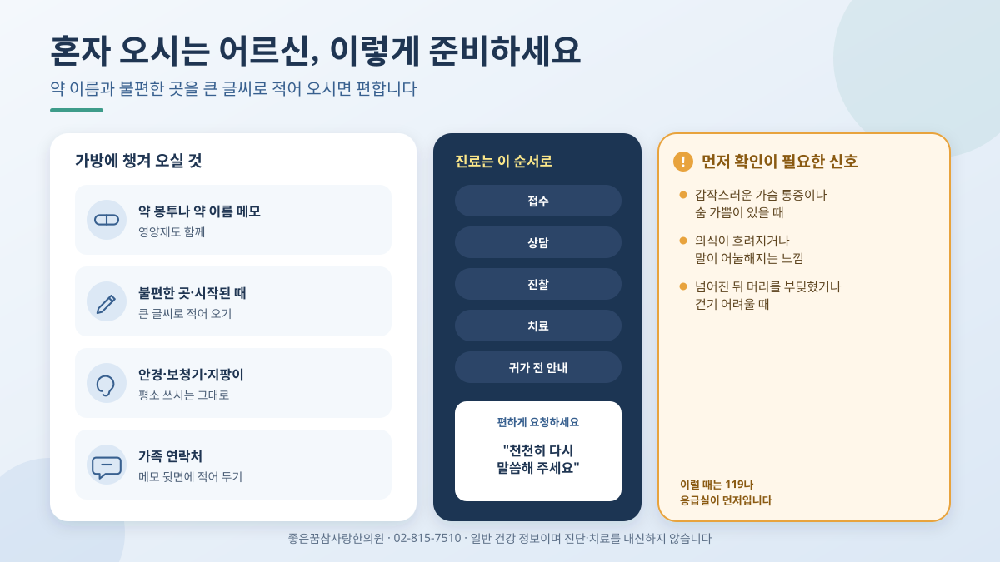

혼자 오시는 어르신은 복용 중인 약 이름과 불편한 곳, 시작된 때를 큰 글씨로 적어 오고 안경이나 보청기를 챙기면 접수와 상담이 한결 수월하며, 천천히 다시 설명해 달라고 편하게 요청하셔도 됩니다.
여쭙는 것
- 지금 가장 불편한 곳은 어디이고 언제부터인가요?
- 드시는 약이나 영양제가 있나요?
- 최근에 넘어지거나 어지러운 일이 있었나요?
한의원에서 함께 살필 것
- 무릎이나 허리가 불편해 걷거나 앉았다 일어서는 동작이 부담될 때 움직이는 모습을 함…
- 밤에 자주 깨거나 낮에 기운이 없다고 느낄 때 잠과 식사, 활동량을 함께 묻습니다.
- 소화가 더디고 입맛이 줄었다고 느낄 때 식사 시간과 양을 함께 살핍니다.
먼저 확인이 필요한 신호
- 갑작스러운 가슴 통증이나 숨 가쁨
- 의식이 흐려지거나 말이 어눌해지는 느낌
- 넘어진 뒤 머리를 부딪혔거나 걷기 어려운 경우

가족 없이 혼자 한의원에 오시는 어르신도 많습니다. 몇 가지만 미리 챙기면 낯선 접수 과정과 상담이 훨씬 편해지고, 집에 돌아가서 지킬 일도 잊지 않을 수 있습니다.
왜 미리 준비하면 좋을까요
- 진료실에 앉으면 긴장해서 하려던 말이 잘 떠오르지 않는 경우가 많습니다.
- 약 이름은 비슷한 것이 많아 기억만으로 말하면 빠지거나 헷갈리기 쉽습니다.
- 잘 들리지 않거나 글씨가 작으면 설명을 놓치고도 다시 묻기 미안해하는 분이 많습니다.
- 몸이 갑자기 불편해질 때 연락할 사람이 적혀 있으면 서로 안심이 됩니다.

먼저 이렇게 여쭙니다
- 지금 가장 불편한 곳은 어디이고 언제부터인가요?
- 드시는 약이나 영양제가 있나요?
- 최근에 넘어지거나 어지러운 일이 있었나요?
- 잠과 식사, 화장실은 평소와 같나요?
방문 전에 먼저 해 볼 수 있는 것
- 복용 중인 약 봉투를 챙기거나 약 이름을 종이에 적기
- 불편한 곳과 시작된 때를 큰 글씨로 메모하기
- 평소 쓰는 안경, 보청기, 지팡이 챙기기
- 급할 때 연락할 가족 연락처를 메모 뒤에 적어 두기
- 진료 중 "천천히 다시 말씀해 주세요"라고 편하게 요청하기

한의원에서 함께 살필 수 있는 경우
- 무릎이나 허리가 불편해 걷거나 앉았다 일어서는 동작이 부담될 때 움직이는 모습을 함께 살핍니다.
- 밤에 자주 깨거나 낮에 기운이 없다고 느낄 때 잠과 식사, 활동량을 함께 묻습니다.
- 소화가 더디고 입맛이 줄었다고 느낄 때 식사 시간과 양을 함께 살핍니다.
좋은꿈참사랑한의원 진료는 접수, 상담, 진찰, 치료, 귀가 전 안내 순서로 진행됩니다. 상담에서는 말씀을 끝까지 듣고 진맥으로 몸 상태를 살피고 필요하다고 판단될 때 다른 진찰을 더하며, 귀가 전에는 집에서 지킬 일을 짧게 정리해 드리니 메모지에 적어 가셔도 됩니다.
며칠 지켜보고, 언제 바로 연락할까요
- 무릎이나 허리가 며칠 뻐근한 정도라면 메모해 두셨다가 예약한 날 말씀하셔도 됩니다.
- 불편한 곳이 1~2주 넘게 줄지 않거나, 밤잠을 설칠 만큼 아프다면 미루지 말고 진료를 받아 보세요.
- 입맛이 줄어 끼니를 거르는 날이 일주일 넘게 이어지거나 몸무게가 눈에 띄게 줄었다면, 병원 검사도 함께 받아 보시기를 권합니다.
- 갑작스러운 가슴 통증, 숨 가쁨, 말이 어눌해지는 느낌, 넘어진 뒤 걷기 어려운 경우는 바로 119가 먼저입니다.

상황별로 이렇게 해 보세요
예를 들어 혈압약과 당뇨약을 함께 드시는 어르신이라면, 약 봉투를 모두 챙겨 오시거나 약 봉투를 휴대폰으로 찍어 오시면 됩니다. 영양제나 건강식품도 함께 보여 주시면 상담에 도움이 됩니다.
예를 들어 귀가 어두워 전화로 예약하기 어려운 어르신이라면, 가족이나 이웃에게 네이버 예약을 부탁하시거나, 직접 오셔서 다음 예약을 잡고 가셔도 됩니다. 다음 예약 날짜는 달력에 크게 적어 두시면 잊지 않으실 수 있습니다.
예를 들어 지팡이를 쓰시며 상도역에서 걸어오시는 어르신이라면, 3번 출구에서 약 200m 직진한 뒤 오거리에서 우회전해 약 200m 오시는 길을 천천히 오시면 됩니다. 걷기가 부담되는 날은 방문 전에 전화로 여쭤 보세요.
스스로 확인해 보는 체크 목록
- 드시는 약 이름이나 약 봉투를 챙기셨나요?
- 불편한 곳과 시작된 때를 큰 글씨로 적어 두셨나요?
- 안경, 보청기, 지팡이를 챙기셨나요?
- 가족 연락처를 메모 뒤에 적어 두셨나요?
- 최근 넘어지거나 어지러웠던 날을 기억해 두셨나요?
- 진료가 끝나면 집에서 지킬 일을 적어 갈 메모지가 있나요?
- 다음 예약 날짜를 크게 적어 둘 달력이 있나요?

첫 방문 진료는 이렇게 진행됩니다
처음 오시면 접수에서 기본 정보를 적으시는데, 글씨 쓰기가 어려우시면 말씀해 주세요. 상담에서는 불편한 곳과 언제부터인지, 드시는 약, 잠과 식사를 천천히 여쭙고, 진맥과 신체 진찰을 합니다. 무릎이나 허리가 불편하시면 앉았다 일어서는 동작이나 걷는 모습을 함께 살피기도 합니다. 오늘 받을 치료와 이유를 먼저 설명해 드리고, 잘 들리지 않으면 언제든 다시 여쭤 보셔도 됩니다. 귀가 전에는 집에서 지킬 일과 다음 방문 날짜를 짧게 정리해 드립니다. 초진은 진찰 시간이 있어 재진보다 오래 걸릴 수 있으니, 오시는 날은 다른 일정을 빠듯하게 잡지 않으시는 편이 마음이 편합니다.
메모는 이렇게 적어 오시면 편합니다
- 맨 위에 이름과 가족 연락처를 크게 적습니다.
- 그 아래 '가장 불편한 곳 한 가지'와 '언제부터'를 적습니다. 여러 곳이 불편하면 불편한 순서대로 번호 없이 줄을 바꿔 적으시면 됩니다.
- 드시는 약은 약 이름을 그대로 옮겨 적거나, 약 봉투를 같이 챙깁니다.
- 마지막 줄에는 '꼭 물어보고 싶은 것'을 한두 가지 적어 두면, 진료실에서 긴장해도 잊지 않으실 수 있습니다.
- 진료 뒤 들은 내용은 같은 종이 뒷면에 적어 오시면 다음 진료 때 함께 보기 좋습니다.

오시는 날 이렇게 준비하시면 편합니다
- 진료는 평일 09:30~20:00(점심 13:00~14:00), 토·일·공휴일 09:30~15:00이니, 사람이 덜 붐비고 덥거나 춥지 않은 시간을 골라 오세요.
- 아침 약을 드시는 분은 평소처럼 드시고 오시면 됩니다. 약은 진료를 이유로 임의로 거르지 않습니다.
- 소매를 걷기 쉽고 무릎이나 허리를 살피기 편한 옷을 입고 오시면 진찰이 수월합니다.
- 오시는 길에 어지럽거나 숨이 차면 무리하지 말고 쉬었다 오시고, 늦어질 것 같으면 02-815-7510으로 알려 주세요.
다시 오실 때는 이렇게 이어서 봅니다
다시 오시면 지난번 가장 불편하셨던 곳이 어떻게 달라졌는지, 집에서 지키기로 한 일은 어떠셨는지부터 여쭙습니다. 진맥은 매번 다시 짚고, 잠과 식사, 화장실 이야기도 이어서 여쭙습니다. 담당 원장이 다른 날에도 이전 기록을 보고 이어서 진료하니, 같은 이야기를 처음부터 다시 하시지 않아도 됩니다.
가족이 멀리 살아 함께 오기 어렵다면, 진료 뒤 들은 내용을 메모해 두셨다가 전화로 가족에게 알려 주셔도 좋습니다. 가족이 궁금한 점이 있으면 방문 전에 02-815-7510으로 문의하셔도 됩니다.
이렇게 기록해 오시면 상담이 쉬워집니다
- 약 이름 목록(약 봉투 사진도 좋습니다)
- 불편한 곳, 시작된 때, 심해지는 시간
- 최근 넘어지거나 어지러웠던 날
- 다른 의료기관에서 들은 설명이나 검사 결과지
이런 증상은 먼저 확인이 필요합니다
- 갑작스러운 가슴 통증이나 숨 가쁨
- 의식이 흐려지거나 말이 어눌해지는 느낌
- 넘어진 뒤 머리를 부딪혔거나 걷기 어려운 경우
이런 경우에는 한의원이 아니라 119나 응급실이 먼저입니다. 복용 중인 약은 임의로 줄이거나 중단하지 않고 처방한 의사와 상의합니다.

함께 읽으면 좋은 글
- 연세 드신 부모님을 모시고 처음 한의원에 갈 때는 무엇을 챙기면 좋을까요?
- 부모님 진료에 함께 갈 때는 무엇을 기록해 가면 좋을까요?
- 처음 접수할 때 적는 문진표에는 무엇을 쓰면 되나요?
한눈에 보는 표
| 구분 | 핵심 |
|---|---|
| 여쭙는 것 | 지금 가장 불편한 곳은 어디이고 언제부터인가요? 드시는 약이나 영양제가 있나요? |
| 한의원에서 함께 살필 것 | 무릎이나 허리가 불편해 걷거나 앉았다 일어서는 동작이 부담될 때 움직이는 모습을 함께 살핍니다. 밤에 자주 깨거나 낮에 기운이 없다고 느낄 때 잠과 식사, 활동량을 함께 묻습니다. |
| 먼저 확인이 필요한 신호 | 갑작스러운 가슴 통증이나 숨 가쁨 의식이 흐려지거나 말이 어눌해지는 느낌 |
자주 묻는 질문
가족 연락처를 꼭 적어 가야 하나요?
필수는 아니지만 몸이 불편해지거나 설명을 전해야 할 때 도움이 되어 적어 두시기를 권합니다.
글씨를 쓰기 어려운데 접수는 어떻게 하나요?
어려운 부분은 접수 때 말씀해 주세요. 걱정되면 방문 전에 02-815-7510으로 미리 문의하셔도 됩니다.
귀가 잘 안 들리는데 괜찮은가요?
보청기를 착용하고 오시고, 잘 들리지 않으면 바로 말씀해 천천히 다시 설명을 들으시면 됩니다.
오시는 길이 걱정돼요.
7호선 상도역 3번 출구에서 약 200m 직진한 뒤 오거리에서 우회전해 약 200m 오시면 됩니다. 걷는 것이 부담되면 방문 전에 전화로 여쭤 보세요.
이 글은 일반적인 건강 정보이며 개인의 진단이나 치료를 대신하지 않습니다. 증상이 있거나 복용 중인 약이 있다면 진료를 통해 확인하세요. 치료 효과는 개인마다 다를 수 있습니다.
작성 기준: 일반적으로 알려져 있는 건강 정보를 참고해 정리했습니다(대표원장 감수). 증상 기록은 1~2주 동안 하루 1회, 비슷한 시간에 적어 오시면 지난 상태와 비교하기 쉽습니다.
좋은꿈참사랑한의원은 재진 때 지난번 이야기부터 이어서 여쭙니다. 진료시간과 예약은 오시는 길에서 확인하세요.